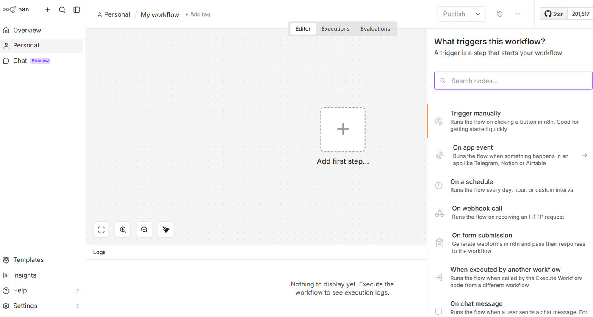
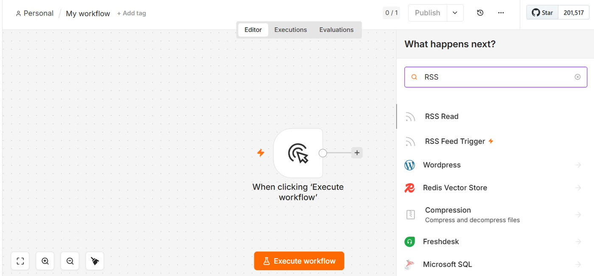
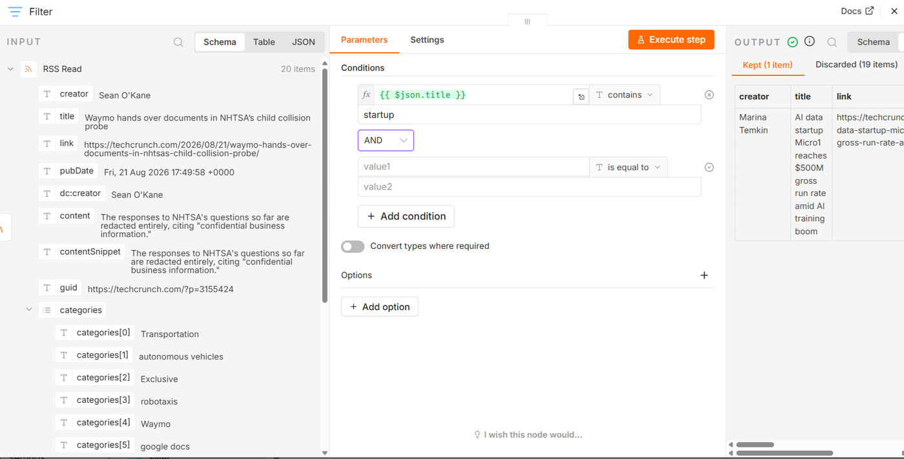
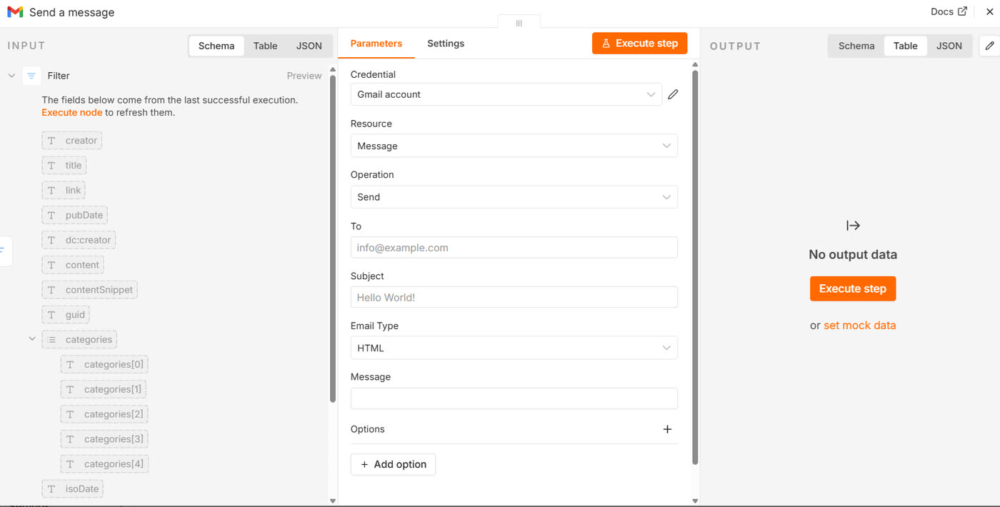
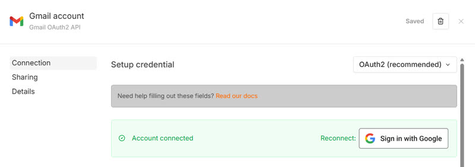
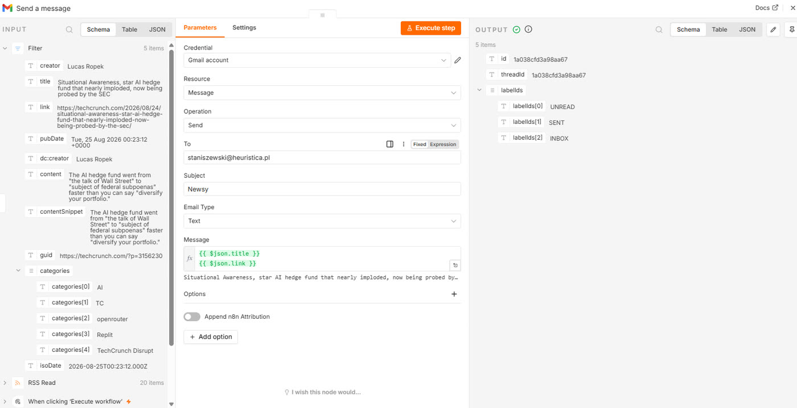
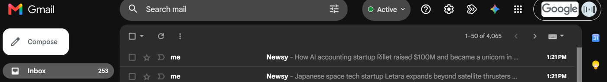
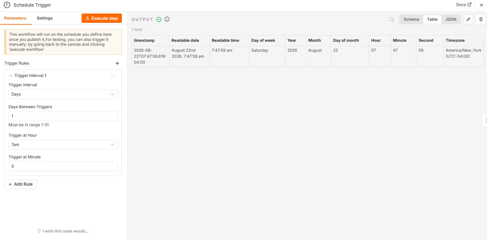
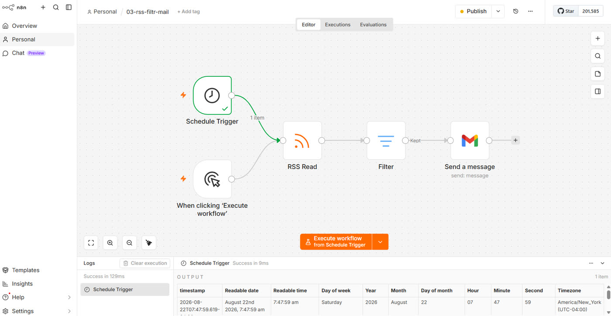

Rozdział 3
Rozdział 3. Dodajemy pierwszy własny węzeł
W rozdziale 1 zaimportowałeś gotowy przepływ - twoja rola ograniczała się do kliknięcia. Teraz zbudujesz coś od zera samodzielnie. Zaimportowany przepływ pokazuje, że coś działa; dopiero zbudowany własnoręcznie pokazuje, dlaczego. Zbudujesz więc prosty system, który pobierze artykuły z bloga, zostawi tylko te na wybrany temat i wyśle je do ciebie mailem. To dokładnie ta sama idea, jaką znajdziesz w rozdziale 5, tyle że na razie bez udziału modelu językowego - tam nauczysz się, jak AI ocenia trafność zamiast prostego dopasowania słowa.
Zaczynamy od pustego przepływu
Wróć do listy swoich przepływów i utwórz nowy, pusty przepływ. Zobaczysz znajomy obszar roboczy z przyciskiem „Add first step" na środku.
Kliknij „Add first step" (dodaj pierwszy krok). Na ekranie zobaczysz: listę kategorii wyzwalaczy do wyboru.

W wyszukiwarce po prawej („Search nodes…") wpisz i wyszukaj „Manual trigger" (uruchom ręcznie) - to dokładnie ten sam typ wyzwalacza, którego używałeś w rozdziale 1. Na ekranie zobaczysz: pojedynczy węzeł na obszarze roboczym, gotowy do rozbudowy.
Dodajesz drugi węzeł: pobieranie danych
Najedź teraz kursorem poza prawą krawędź węzła wyzwalacza, tam gdzie na końcu linii widzisz mały znak plus. Kliknij go. Na ekranie znowu zobaczysz pole wyszukiwania węzłów.
Wpisz „RSS" w polu wyszukiwania, znajdź i kliknij węzeł „RSS Read" (czytaj RSS) z listy wyników.

Kliknij dwukrotnie węzeł „RSS Read" i w polu „URL" wklej adres kanału RSS: https://techcrunch.com/feed/. Jeśli wolisz śledzić inny temat, to każdy działający adres RSS zadziała tak samo.
Kliknij „Execute step" (wykonaj krok) w prawym górnym rogu panelu węzła. Na ekranie zobaczysz listę artykułów w panelu OUTPUT, każdy z autorem, tytułem, linkiem i datą publikacji.
Dodajesz trzeci węzeł: filtr
Kliknij znak plus przy prawej krawędzi węzła „RSS Read". Wpisz „Filter" i kliknij węzeł „Filter" (filtruj) z listy wyników.
Po dwukrotnym kliknięciu węzła kliknij „Add condition" (dodaj warunek). n8n pokaże puste pole na wartość do sprawdzenia. W to pole musisz wstawić tytuł artykułu - i tu po raz pierwszy zrobisz coś nowego: po lewej stronie ekranu, w panelu danych wejściowych, znajdź pole title i przeciągnij je myszą prosto na to puste pole warunku.
Na ekranie zobaczyszw polu pojawi się tekst w podwójnym nawiasie klamrowym, coś w rodzaju {{ $json.title }}.
Wybierz typ porównania „String" i warunek „contains" (zawiera) z listy. W polu wartości do porównania wpisz słowo, którego szukasz, na przykład „AI" albo „startup" itp.

Kliknij „Execute step". Na ekranie zobaczysz: krótszą listę w panelu OUTPUT - tylko te artykuły, w których tytule pojawiło się słowo „AI".
Zanim dodasz mail: sprawdź, ile masz artykułów
Zajrzyj jeszcze raz do panelu OUTPUT węzła „Filter" i policz elementy, które przez niego przeszły. Jeśli jest ich np. więcej niż pięć, wróć do warunku i wpisz jakieś inne, węższe słowo. Za chwilę zobaczysz, dlaczego to ma znaczenie.
Dodajesz czwarty węzeł: wysyłka maila
Kliknij znak plus przy prawej krawędzi węzła „Filter". Wpisz „Gmail" i wybierz węzeł „Gmail" z listy wyników.
Tu też pojawia się coś, co powtórzy się przy większości węzłów łączących się z usługami zewnętrznymi. Jeden węzeł Gmail potrafi robić wiele różnych rzeczy: wysyłać wiadomości, czytać je, tworzyć wersje robocze, zarządzać etykietami itp. Zanim pokaże ci właściwe pola, musi wiedzieć, którą z tych rzeczy wybierasz.
Na liście „MESSAGE ACTIONS" wybierz akcję „Send a message" (wyślij wiadomość). Na ekranie zobaczysz: panel węzła.
W panelu zobaczysz pola „Credential", „Resource", „Operation", „To", „Subject", „Email Type" i „Message" oraz sekcję „Options".

Węzeł prawdopodobnie zgłosi teraz, że brakuje mu danych dostępowych, czyli zgody na wysyłanie maili w twoim imieniu. Kliknij „Create new credential" (utwórz nowe dane dostępowe), a potem „Sign in with Google" (zaloguj się przez Google) i przejdź logowanie w oknie, które się otworzy.
Na ekranie zobaczyszpowrót do n8n i zielony komunikat potwierdzający, że konto zostało połączone.

Teraz wypełnij pola wiadomości:
- „To" (do): twój własny adres e-mail.
- „Subject" (temat): na przykład „Nowe artykuły o AI".
- „Email Type" (typ wiadomości): zostaw „Text" (tekst). Druga opcja, „HTML", przydaje się, gdy chcesz formatować treść, ale teraz tylko by przeszkadzała.
- „Message" (treść): przeciągnij tu pole „title" z lewego panelu danych wejściowych, tak samo jak przy filtrze w kroku 9. Kliknij za wstawionym tekstem, wciśnij Enter, żeby zrobić nową linię, i dopiero teraz przeciągnij pole link. Bez tego oba pola skleją się w jeden nieczytelny ciąg.
Na ekranie zobaczyszw polu treści dwa fragmenty w podwójnych nawiasach klamrowych, jeden pod drugim, a pod polem podgląd z prawdziwym tytułem i linkiem pierwszego artykułu.

Zanim klikniesz, dwie rzeczy, o których warto wiedzieć.
Po pierwsze, „Execute step" w tym węźle naprawdę wysyła wiadomość. Wszystko więc, co tu ustawiłeś, za chwilę pojedzie na twoją skrzynkę.
Po drugie, nie dostaniesz jednego maila. Dostaniesz tyle maili, ile artykułów przeszło przez filtr. Jeśli filtr przepuścił cztery artykuły, dostaniesz cztery osobne wiadomości, każdą z jednym tytułem. W tym przypadku to nie jest błąd i nie ma co go naprawiać. To jedna z zasad działania n8n i jedna z rzeczy, które warto dobrze rozumieć.
Pamiętasz liczby pod węzłami z rozdziału 2? Jeśli pod węzłem „Filter" stoi „4 items", to węzeł Gmail wykona się cztery razy: raz z pierwszym artykułem, raz z drugim i tak dalej. Za każdym razem pole title będzie znaczyło coś innego, bo za każdym razem odnosi się do innego elementu.
Ta sama zasada rządzi wszystkim, co zbudujesz dalej. Kiedy w rozdziale 5 podłączysz model językowy do listy np. dziesięciu artykułów, model dostanie dziesięć osobnych pytań, a nie jedno pytanie o dziesięć artykułów. Zapłacisz też za to dziesięć razy.
Da się to zmienić, czyli zebrać wszystkie elementy w jeden przed wysyłką. Wrócimy do tego w rozdziale 6, gdzie będzie do tego dobry powód. Na razie zostawiamy jak jest, bo dwa czy cztery maile to i tak niska cena za zrozumienie i zapamiętanie tej zasady :-)
Kliknij „Execute step".
Na ekranie zobaczyszzieloną obwódkę wokół węzła Gmail i liczbę pod nim odpowiadającą liczbie wysłanych wiadomości.
Sprawdź, czy działa: otwórz swoją skrzynkę pocztową. Powinny czekać na ciebie nowe wiadomości o temacie, który wpisałeś - np. „Nowe artykuły o AI", tyle sztuk, ile pokazała liczba pod węzłem Gmail. W każdej jeden tytuł i jeden link.

A teraz czas na prawdziwą automatyzację
Zbudowałeś przepływ, który zbiera artykuły, odsiewa nieciekawe i przysyła resztę na twoją skrzynkę. Jest tylko jeden problem: żeby to się stało, musisz usiąść przy komputerze, otworzyć n8n i kliknąć. A to jeszcze nie jest automatyzacja.
Pamiętasz z rozdziału 2, że pierwszy węzeł każdego przepływu decyduje, kiedy przepływ się uruchomi? Do tej pory pracował tam wyzwalacz ręczny, który czeka na twoje kliknięcie. Teraz dołożysz drugi, który nie czeka na nikogo.
Kliknij zatem przycisk z plusem w prawym górnym rogu obszaru roboczego. W polu wyszukiwania wpisz „Schedule" i wybierz węzeł „Schedule Trigger" (wyzwalacz harmonogramu). Na ekranie zobaczysz: nowy węzeł stojący samotnie obok twojego przepływu, jeszcze z niczym niepołączony.
W panelu węzła znajdź listę „Trigger Interval" (odstęp między uruchomieniami) i wybierz „Days" (dni). Pojawią się trzy pola. W „Days Between Triggers" (co ile dni) zostaw 1.
W „Trigger at Hour" (o której godzinie) wybierz 7am. W „Trigger at Minute" (w której minucie) wpisz 0 i zamknij panel.

Przeciągnij myszką od kropki na prawej krawędzi węzła „Schedule Trigger" do lewej krawędzi węzła „RSS Read" i puść. Na ekranie zobaczysz: dwie strzałki wchodzące do węzła „RSS Read", jedną od wyzwalacza ręcznego i jedną od harmonogramu. Przepływ, jak widać, może mieć więcej niż jeden wyzwalacz. Ręczny zostaje, bo dzięki niemu nadal uruchomisz wszystko na żądanie, kiedy chcesz coś sprawdzić. Harmonogram robi to samo, tylko sam z siebie, o siódmej rano.

Zapisz przepływ przyciskiem „Publish" (prawy górny róg) - teraz twój przepływ jest już aktywny.
Gdzie zobaczyć, czy zadziałało
Uruchomienia z harmonogramu nie zostawiają śladu na obszarze roboczym. Nie ma tam zielonych obwódek, bo w chwili wykonania nikt nie patrzył na ekran. Zapis znajdziesz w zakładce „Executions" (uruchomienia) na górze widoku przepływu: lista wszystkich wykonań z datą, godziną, czasem trwania i informacją, czy zakończyły się sukcesem. Zapamiętaj tę zakładkę - to główne miejsce, w którym sprawdza się, dlaczego coś przestało działać, i będziesz do niej wracać w każdym kolejnym rozdziale.
Co może pójść nie tak
- W panelu węzła Gmail nie ma pól „To" ani „Subject". Sprawdź listy „Resource" i „Operation" na górze panelu. Muszą być ustawione na „Message" i „Send". Dopóki nie wybierzesz operacji, węzeł nie wie, jakie pola ci pokazać.
- Dostałeś kilkanaście maili zamiast kilku. Filtr przepuścił za dużo artykułów. Wróć do warunku i wpisz węższe słowo, potem uruchom przepływ jeszcze raz.
- Tytuł i link skleiły się w jedną linię. W polu „Message" brakuje przejścia do nowej linii między przeciągniętymi polami. Kliknij między nimi i wciśnij Enter.
- Węzeł Gmail zgłasza błąd „insufficient permission" (niewystarczające uprawnienia). Połączenie z kontem Google nie objęło wszystkich potrzebnych zgód. Usuń dane dostępowe i połącz konto jeszcze raz, zaznaczając wszystkie proszone uprawnienia.
- Mail nie przyszedł, a węzeł Gmail jest zielony. Sprawdź folder spam. Pierwsza wiadomość z nowo połączonego konta czasem tam trafia.
Wariacje na temat
Odłącz na chwilę węzeł Gmail, klikając strzałkę między nim a filtrem i usuwając połączenie. Zmień słowo w warunku filtra na coś, co na pewno pojawi się w wielu tytułach, na przykład „the", i uruchom przepływ. Zobacz, jak urosła liczba pod węzłem „Filter". Potem przywróć poprzednie słowo i połączenie.